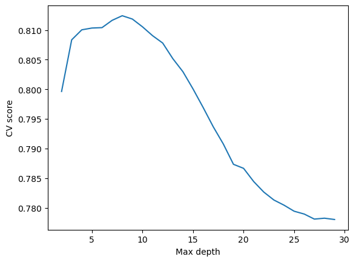

I would like to predict whether an individual’s income is over $50K based on all the variables in possible_features except for sex. I will create a feature matrix, a label vector, and a group label vector using the relevant variables, and split them into training data and test data.
features_to_use = [f for f in possible_features if f notin ["PINCP", "SEX"]]IncomeProblem = BasicProblem( features=features_to_use, target='PINCP', target_transform=lambda x: (x >50000) *1, # transform income variable into binary category group='SEX', preprocess=lambda x: x, postprocess=lambda x: np.nan_to_num(x, -1),)features, label, group = IncomeProblem.df_to_numpy(acs_data)# train-test splitfrom sklearn.model_selection import train_test_splitX_train, X_test, y_train, y_test, group_train, group_test = train_test_split( features, label, group, test_size=0.2, random_state=0)
Basic Descriptives
Before training any models, I will first explore the basic descriptives of the dataset.
49,135 of the individuals in the dataset are male and 50,870 are female.
df.groupby("group")["label"].mean().reset_index()
group
label
0
1
0.326712
1
2
0.193611
Around 32.7% of male individuals in the dataset has income over 50k dollars, but only 19.4% of women has income over $50k.
import seaborn as snsproportions = df.groupby(["group", "RAC1P"])["label"].mean().reset_index()ax = sns.barplot(data = proportions, x ="RAC1P", y ="label", hue ="group")
It seems that for almost all race groups, the proportion of men with income over $50k is greater than that of women. The only exception is African Americans, for whom this proportion doesn’t differ very much across sex.
Training the model
I choose to use a decision tree classifier for my prediction. I will use cross-validation to find out the best max depth for the model.
from sklearn.tree import DecisionTreeClassifierfrom sklearn.model_selection import cross_val_scorecv_max =0best_depth =0cvs = []for d inrange(2, 30):# fit model DTC = DecisionTreeClassifier(max_depth = d) DTC.fit(X_train, y_train)# cross-validation cv_scores = cross_val_score(DTC, X_train, y_train, cv =5) cv_mean = cv_scores.mean() cvs.append(cv_mean)# update best cv score and best degreeif cv_mean > cv_max: cv_max = cv_mean best_depth = dprint("Best cv score = ", cv_max)print("Best max depth = ", best_depth)# draw a line chart for cv scores at varying degreesimport matplotlib.pyplot as pltfig = plt.plot(range(2, 30), cvs)xlab = plt.xlabel("Max depth")ylab = plt.ylabel("CV score")
Best cv score = 0.8124193790310483
Best max depth = 8

As shown by the graph, the best performance is reached at a max depth of 8.
Auditing the Model
Next, I will use the model on the test data and perform an audit for bias.
# train model and predict using test dataDTC = DecisionTreeClassifier(max_depth = best_depth)DTC.fit(X_train, y_train)y_pred = DTC.predict(X_test)
Overall Measures
First, we will take a look at the measures for the whole dataset.
The overall accuracy and PPV show that the model is quite accurate. The FPR is one time higher than the FPR, suggesting that this model is more likely to wrongly predict that someone earns over $50K when they does not in reality, compared to wrongly predict that someone earns less than 50K.
By-Group Measures
Then we will compute the same measures by each group (i.e., male and female) and see if there are any differences.
The false negative rate is higher for male than for female. This shows that if a man earns more than $50K, the model is more likely to make a mistake and say he earns less, compared to the same situation for a woman.
FPR_male, FPR_female
(0.24177115987460815, 0.3992214532871972)
The false positive rate is higher for female than for male. This means that the model is more likely to predict that a woman earns more than $50K when she actually earns less.
Bias Measures
Finally, we will calculate the three different bias measures discussed by Chouldechova (2017).
The first measure is calibration. Good calibration means that a man and a woman who received the same score (in this case, either 0 or 1) have the same probability of earning over $50K.
# Calibrationprint("% positive for male predicted positive = ", y_test[male][y_pred[male] ==1].mean())print("% positive for female predicted positive = ", y_test[female][y_pred[female] ==1].mean())print("% positive for male predicted negative = ", y_test[male][y_pred[male] ==0].mean())print("% positive for female predicted negative = ", y_test[female][y_pred[female] ==0].mean())
% positive for male predicted positive = 0.7582288401253918
% positive for female predicted positive = 0.6007785467128027
% positive for male predicted negative = 0.20811708532281503
% positive for female predicted negative = 0.10177075399847677
The probabilities are around 0.1-0.15 higher for men than for women. It looks like the model is roughly calibrated, but still, there is a slight difference in what the same score means for the two groups.
Next we will look at error rate balance. According to Chouldechova (2017), a score satisfies error rate balance at a threshold \(S_{HR}\) if the FPR and FNR are both equal across groups. Because our model only have binary scores, this would just mean that the FPR and FNR are equal across gender.
FPR_male, FPR_female
(0.24177115987460815, 0.3992214532871972)
FNR_male, FNR_female
(0.20811708532281503, 0.10177075399847677)
From the FPR and FNR that we calculated in the last section, we can see that the model doesn’t have error rate balance. The FPR is higher for women and the FNR is higher for men.
Our last measure is statistical parity. This is satisfied if the proportion of individuals classified as positive is the same for each group.
This model doesn’t have statistical parity – the proportion of women classified as earning over $50K is higher than that of men.
Concluding Discussion
With a system like what I have built in this blogpost, companies will be able to identify high-income individuals based on a set of demographics data. This would especially benefit companies that sell high-end products by enabling them to locate their target group of consumers.
The main takeaway from my bias audit is that this model tends to overestimate the income of a woman and underestimate the income of a man. If the model is deployed in a large-scale setting, it would mean that more women will be incorrectly identified as marketing targets for certain products. Moreover, in the case that companies make use of predicted income for discriminatory pricing across income groups, more women will be harmed by this act.
I think that this model exhibits bias in all forms that I have measured. In terms of calibration, men who received positive labels were more likely to be positive than women who received positive labels. Looking at the error rates, we also see that false positive rates are higher for women and false negative rates are higher for men. For statistical parity, we see a similar pattern where higher proportions of women than men were classified as positive. All of these measures reflect more or less the same theme.
I find it interesting and unsettling that just like the recidivism prediction model that we discussed in class, the bias of this model is also potentially an artifact of inequalities present in the real world. Given a man and a woman who are similar in features other than sex, the model would predict that they have similar levels of income. In reality, however, women with similar qualifications as men are often paid less as a result of structural discrimination that is not captured by the dataset. This explains why the model tends to classify women as earning more than they do in reality.
Another problem beyond bias is that whether it is ethical at all to use any model that predicts income. Even if the model is accurate and relatively unbiased, it is hard to see how such a model would benefit the individuals upon which it is used. The government may need income information for social welfare programs, but it doesn’t need to use a model to acquire such information. As for companies, I would imagine that the main motivation for predicting income is to maximize profit by discriminately charging income groups.